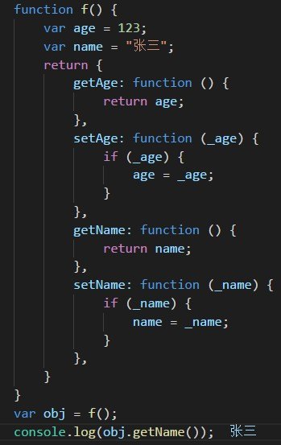

1.ajax同步和异步怎么理解
同步:一个一个执行，必须要等当前任务执行完了 才能执行
异步:可以不用等当前任务完毕就执行下一个任务
2. Js面相对象是怎么理解的
面向对象或者是面向过程都是为了解决问题而采用的一种方式(策略)
面向-过程：关注的是解决问题需要的某一个过程(步骤)，关注的是具体的过程
面向-对象：关注的是解决问题需要的合适对象 万物皆对象/所有的东西都是对象
面向对象的三大特性： 封装 (把一些代码以特定的形式组织在一起，封装对象的方法)，思想
继承 (获取他人资源的一种方式/获取其它对象成员的一种方式) a{属性|方法} var a = fn1() 原型链
多态 (多种形态，JavaScript天生就是一门多态的语言)
3. Js闭包是如何理解的
函数有自己独有的作用域 一般外部拿不到函数内部的局部变量
如果想要读取函数内部变量 就要用上闭包 那就是在那就是在函数的内部，再定义一个函数。 我的理解是，闭包就是能够读取其他函数内部变量的函数。
由于在Javascript语言中，只有函数内部的子函数才能读取局部变量，因此可以把闭包简单理解成"定义在一个函数内部的函数"。
所以，在本质上，闭包就是将函数内部和函数外部连接起来的一座桥梁。

4.跨域请求是怎么理解的？
Ajax本身不能跨域发送网络请求，但是在开发中我们有时候确实需要请求其它服务器上面的资源
json实现原理：虽然Ajax网络请求不能跨域，但是我们可以借助某些标签来实现跨域，script标签和img
img src="https://media2.v.bookuu.com/activity/17/25/20171019172549302.jpg" alt="">
jsonP 可以跨域拿到数据
script>
function render(obj) {
console.log(obj);
}
script src="https://www.baidu.com/sugrec?prod=pc&wd=bibi&cb=render">
5.请描述一下cookies和localStorage的区别？
cookie [1] 每次发送网络请求给服务器的时候，都会把当前的Cookie数据带上
[2] Cookie用于存储数据，但是有限制(大小限制
<4KB | 个数限制 网页<50 网站<200)
[3]
在相同的域(源)中是可以共享的 Cookie数据不能跨浏览器访问(共享)。 Cookie数据存在于服务器 localStorage(本地存储) 把数据保存到电脑硬盘上面
6.事件委托
事件委托是一种用来解决页面中事件处理函数过多问题的方案，它利用事件冒泡只指定一个事件处理函数就能够管理某一类型的所有事件， 恰当的利用事件委托，可以节省内存空间，有效的提升程序的整体性能。
优点：提升程序的性能，可以为尚未存在的标签来注册事件 比如页面有懒加载 有的标签还没显示出来 可以用事件委托的方式解决
如果我们使用了事件委托，那么我们在事件处理程序中如何区分到底是哪个标签的事件被触发了吗？event /*属性：
target 目标(永远不变的，永远指向事件真正触发的那个标签)